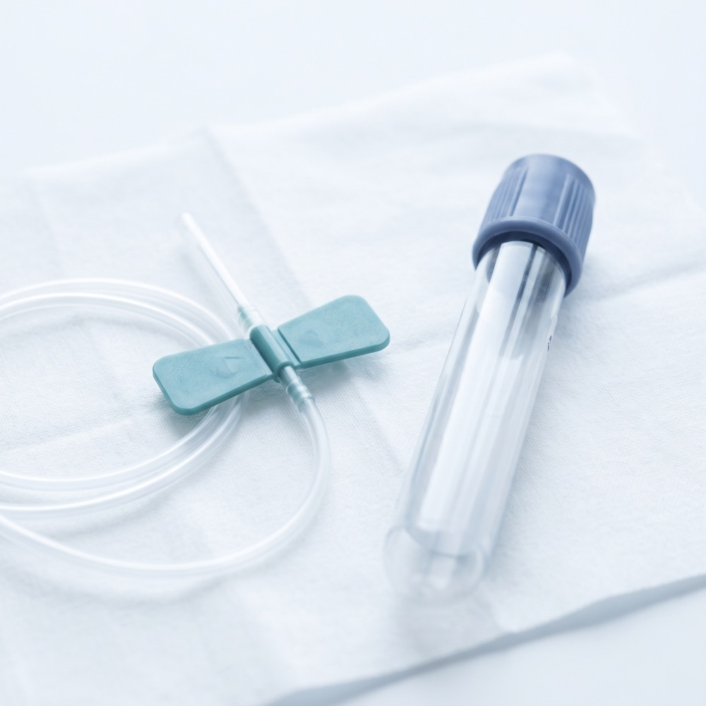
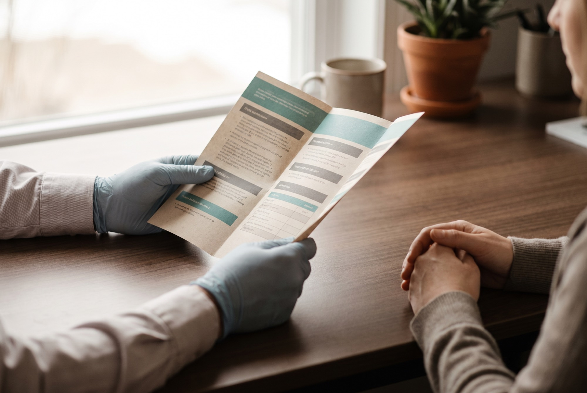
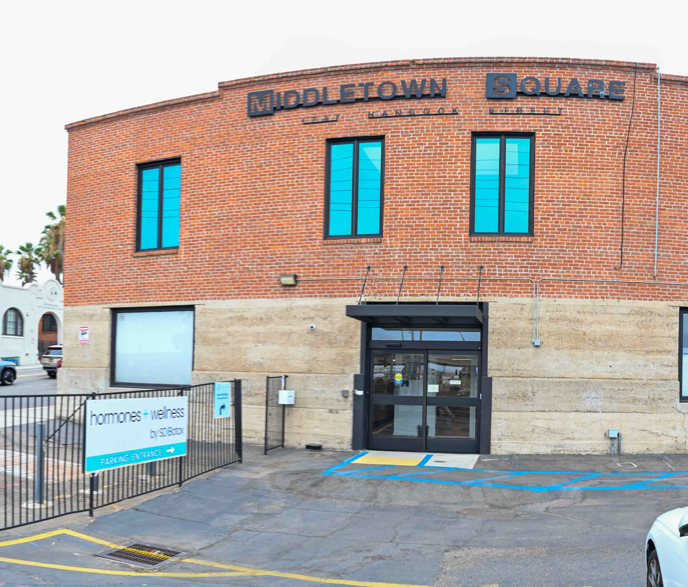
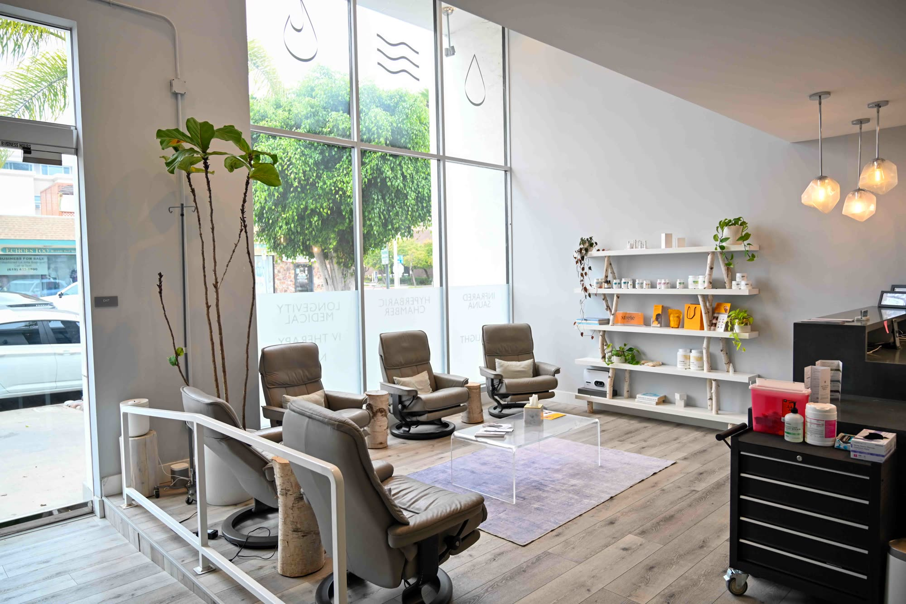

Is hormone therapy right for you? A two minute look at how SD Body approaches physician-led care.
Overview of Hormone Replacement
Everyone eventually experiences the signs and symptoms of aging. Hormone replacement therapy (HRT) can address some of aging's most persistent problems.
In men, testosterone typically declines gradually from around age 30. In women the pattern is different: estrogen and progesterone fall more sharply through perimenopause and menopause. Growth hormone output also tapers with age. Any of these shifts can affect quality of life, showing up as weight gain, loss of energy, declining fitness, sexual dysfunction and more.
SD Body is a leader in hormone replacement therapy in San Diego, CA, and can help you regain lost energy and vitality. Our physicians take a holistic, custom and preventative approach to hormone replacement, so your plan supports your fitness, nutrition and life goals rather than working against them.
Hormone decline affects anyone, men and women alike, but it does not have to mean a decline in your quality of life or your peak performance.
People across San Diego come to SD Body to build their best life through personalized hormone replacement, nutrition and fitness plans.
If you decide to explore hormone replacement therapy, it is important to consult an experienced physician about your symptoms, their possible causes and your options, so you can be confident you are entering the right treatment for you.
What you'll learn in this overview
Every topic below is covered on this page. Select one to jump straight to it.
- Symptoms of Hormonal Imbalance
- Causes of Hormone Decline
- Hormone Decline Risk Factors
- Hormones and Aging
- Hormone Replacement for Men and Women
- Hormone Replacement Diagnosis
- Hormone Replacement Therapy Options
- Testosterone
- Sermorelin
- DHEA
- Thyroid
- Estrogen
- Progesterone
- Hormone Replacement Therapy (HRT)
- Hormone Creams
- Hormone Shots
- Hormone Pills
- Hormone Patches
- Make a Plan for Your Best Life
- What are Your Goals
- Lose Weight
- Gain Muscle
- Improved Energy
- Better Sleep
- Improved Sex Life
- Stronger Erections
- Beat Depression
- Control Anxiety
- Ease Mood Swings
- Improve Memory
- What to Expect in Your First HRT Visit
- The Importance of a Holistic Approach to HRT
Symptoms of Hormone Imbalance
Hormones are chemicals produced in the glands of your body's endocrine system. A hormonal imbalance occurs when levels in your bloodstream are too high or too low for what your body needs. Hormones regulate many of the processes behind your health, energy, strength, sexual health and mood.
Because hormones are so central to how your body runs, an imbalance can produce a wide range of frustrating symptoms.
- Weight Gain
- Lost Muscle
- Lack of Energy
- Insomnia
- Low Sex Drive
- Erectile Dysfunction
- Depression
- Anxiety
- Mood Swings
- Memory Loss
Causes of Hormone Decline
Your hormone levels do not stay steady throughout your lifetime. Many factors affect how well your endocrine system works and whether it produces normal hormone levels. The clinicians at SD Body can help you identify the most likely causes behind changes to your metabolism, weight, strength and sexual health. These are the causes we see most often in our offices.
Aging
The most common cause of a change in hormonal balance is simply aging. As we grow older, hormone production begins to fluctuate and decline. Many people know the effects of menopause on women, when both estrogen and progesterone fall rapidly. Men feel it too, as testosterone decreases with age. Some men notice the effects of lower testosterone as early as 30.
Strenuous exercise
Exercise is important for staying healthy and looking your best. Sometimes, though, strenuous training pushes the body to divert energy into activity and repair and away from less essential processes, which can reduce hormone production. With the right approach to hormone replacement therapy, you can get back in the gym and make some of your best progress.
Poor diet
The wrong diet puts stress on your body and can reduce hormone production. Eating the wrong foods, restricting calories severely or making other dietary mistakes can lower testosterone and estrogen levels. At SD Body we take a holistic approach to managing your hormone levels, covering hormone therapy alongside diet, exercise and other lifestyle choices.

Medical conditions
Certain medications, conditions and medical procedures also affect hormone levels. If you are experiencing symptoms of hormone decline, make an appointment with SD Body so serious underlying conditions can be ruled out. Call (619) 772-0252 to speak with our team.
Hormone Decline Risk Factors
- Family History (Heredity)
- Age
- Strenuous Exercise
- Stress
- Medical Conditions
- Poor Diet
Hormones and Aging
By the time your body reaches 30, you will probably start wrestling with the effects of aging. The link between hormones and aging is clear. However carefully you build your diet and exercise programs, and however well you manage stress, aging eventually takes a toll on hormone production. It becomes a cycle, because reduced hormone production can accelerate many of the problems people associate with getting older, including lost strength, weight gain and low energy.
Many people believe these problems are inevitable. They do not have to be. SD Body can help you slow the effects of aging and work toward performance you may not have reached even when you were younger. Discuss your particular issues with our clinicians and together we can build an approach grounded in current scientific and medical evidence.
Hormone Replacement for Men and Women
Hormone Replacement for Men
We see more and more men in San Diego struggling with declining testosterone and other hormone imbalances, including problems in the gym and the bedroom, increased belly fat, mood changes and loss of energy.
Many men do not realise these problems are connected to falling DHEA and testosterone levels and to lifestyle choices, so they never tackle them head on. You do not have to settle simply because you are getting older.
SD Body has helped many men regain their confidence and enjoy life more than before. Our hormone specialists can build a custom hormone replacement and lifestyle plan to get you back to peak performance. See hormone care for men.
Hormone Replacement for Women
Dealing with menopause is never easy. As estrogen levels fall you can experience uncomfortable symptoms including hot flashes, vaginal dryness, difficulty sleeping, mood swings and anxiety.
Hormone replacement therapy can be very effective at easing menopausal symptoms and restoring energy and vitality. The clinicians at SD Body will review your options, including estrogen, progesterone and in some cases testosterone, and weigh the benefits and risks of each with you.
After a thorough evaluation we will help you decide on the right combination of hormone replacement and lifestyle changes for your symptoms and medical history. See hormone care for women.

Hormone Replacement Diagnosis
The first step in determining whether hormone replacement therapy is right for you is an appointment with the clinicians at SD Body. Your appointment is simple, routine and entirely confidential. To rule out medical causes, your SD Body clinician conducts a routine physical exam and asks about your medical and family history. Depending on what that suggests, laboratory testing may follow, and your clinician will explain which tests are being ordered and why.
Our physicians take a holistic, custom and preventative approach to hormone replacement, so your plan supports your fitness, nutrition and life goals with confidence.
If you decide to explore hormone replacement therapy, it is important to consult an experienced physician about your symptoms, their possible causes and your options, so you can be confident you are entering the right treatment for you.
What Are My Hormone Replacement Therapy Options?
The most important step in exploring your options is seeing a clinician who understands your needs, approaches treatment holistically and understands what living with energy and vitality in San Diego means to you. SD Body is a genuine partner in that.
The clinicians at SD Body understand there is more at stake with HRT than fighting aging. It is important to rule out chronic disease and other risks associated with hormonal imbalance, including diabetes, high blood pressure, prostate issues and heart disease. Most hormone-related symptoms are very treatable, but it matters that you are seen by a qualified clinician in a professional office setting so the right program can be designed for you.
You have many options for hormone replacement therapy in San Diego, and unfortunately many of them take a one-size-fits-all approach that may or may not suit you. Your health and lifestyle are too important to leave to questionable over the counter products and unqualified practitioners who could make your symptoms worse rather than better.
At SD Body we take a personal interest in your symptoms and goals, and we customise every treatment plan. Hormone replacement therapy is often the cornerstone, and we also work with you on the lifestyle factors that affect your hormones, including carefully designed diet and exercise programs.
You can start enjoying your life again with the confidence of working with qualified professionals.
Hormone Replacement Therapy Options
- Testosterone
- Sermorelin
- DHEA
- Thyroid
- Estrogen
- Progesterone
- Hormone Creams
- Hormone Shots
- Hormone Pills
- Hormone Patches
Hormone Replacement Therapy Options
Which of these is relevant to you depends on your labs, your symptoms and your history. Your clinician will talk you through the ones that apply.
Testosterone
Testosterone is the male sex hormone responsible for reproductive development, and it is essential to how the male body functions. After 30 it is common for men to experience a gradual decline. Although some decrease is normal, for some men it happens unusually fast. When testosterone dips the body does not function at its best, and the result can be reduced sex drive, fatigue, muscle loss and other symptoms.
Women benefit from testosterone too. In both men and women it contributes to the energy and motivation you felt in early adulthood, supports sex drive, helps build muscle and keeps energy levels up.
Sermorelin
Sermorelin acts on your pituitary gland to prompt the release of your own human growth hormone, rather than injecting HGH directly. Because your body increases its own production, the effect is gradual and follows your natural processes.
Sermorelin therapy has grown in popularity in San Diego as a more cost effective alternative to direct HGH injection. It is prescribed selectively and is not FDA approved for anti-aging use, so your clinician will explain what is and is not established before it is considered.
DHEA
DHEA is an abundant hormone produced naturally in the adrenal glands. Without it the body cannot create other necessary hormones such as testosterone and estrogen, and it also helps keep your hormones functioning in balance.
Natural DHEA levels peak in adulthood and decline slowly with age. A synthetic version is available for patients with irregular levels, though a low reading on its own does not mean supplementation is needed. Any decision is made in the context of your symptoms and full results.
Thyroid
Two thyroid hormones are produced by the thyroid gland, and they influence many of the metabolic processes in your body. Thyroid problems can leave you feeling far from your best.
If you are experiencing weight gain, sweating, loss of energy, mood swings or swelling in your neck, you could be needlessly living with a very treatable thyroid problem. Thyroid function is checked rather than assumed, because these symptoms closely mimic hormone decline.
Estrogen
Estrogen is the hormone uniquely responsible for sexual and reproductive development in women. Along with progesterone it is one of the most important hormones in the female body, affecting the reproductive system, the skeletal structure and even the liver and heart.
All women are susceptible to low estrogen. As women approach menopause, estrogen levels decrease sharply, producing a wide range of bothersome symptoms.
Progesterone
Progesterone is a sex hormone involved in many processes throughout the body, and one of its main roles is moderating the effects of estrogen by balancing its actions and supporting healthy cell growth.
In hormone therapy its most important job is protecting the uterine lining. Women who have a uterus and take estrogen are generally prescribed progesterone alongside it to reduce the risk of endometrial overgrowth. A decline in progesterone usually results from aging and can affect a woman's health in several ways.
Benefits and risks differ by hormone, by dose and by patient. Nothing here is a recommendation for treatment.
Hormone Replacement Therapy (HRT)
Balance matters in any approach to hormone replacement therapy. HRT uses hormones like the ones above to treat the symptoms associated with hormone imbalance. At SD Body we take a holistic view of your whole life, combining lifestyle design, diet, exercise and other approaches with a custom designed hormone replacement plan.
Hormone replacement therapy is not only for menopausal women or people of advanced age. Many of our clients in San Diego want to live full lives with energy and strength, and look to HRT to support weight loss, strength gains and overall quality of life.
In your specific plan, hormones may be prescribed in several different forms for both men and women, including pills, patches, creams and injections.
How hormones are delivered
Hormone Creams
Creams and gels deliver hormones into your bloodstream through skin absorption. Many people prefer applying a cream to taking pills or injections. Absorption is more gradual, and it varies between people and between formulations, so your clinician will advise whether a cream suits your particular hormone and dose.
Hormone Shots
Injections are one of the most common forms of hormone treatment. Some hormones are broken down by digestion or absorb poorly through skin, and for those an injection is the more dependable route. Injections can be given by your clinician at SD Body or self-administered. As with all hormone therapy, regular appointments matter so your health and progress can be monitored and doses adjusted.
Hormone Pills
Pills allow your SD Body clinician to deliver a precise prescribed dose, and to vary it easily if needed. They are convenient and make it simple to stay consistent with your plan. Oral and transdermal routes carry different risk profiles for some hormones, which is part of why the choice is made case by case.
Hormone Patches
Patches are applied to the skin and release hormones steadily into the bloodstream over time. Many people value the convenience and consistent dosing, with no daily pill to remember and no injection, and the patch replaced on a set schedule. Your clinician will help determine whether a patch suits your plan and dose.
Make a Plan For Your Best Life
Hormones have an enormous influence on your health, happiness and quality of life. Hormone replacement therapy can be important as you age, and hormone balance is central to getting the most out of life at any age. Hormones help you stay healthy, support your defences against disease and maintain your vitality throughout your life.
SD Body can help you build more than a hormone replacement therapy plan. We can help you build a plan for the best life possible.
Here are a few of the goals we have helped our San Diego clients work toward.
What Are Your Goals?
Lose Weight
A question we hear a lot is "I'm dieting and exercising regularly, why am I not losing weight?" Perhaps you are trying harder than ever in the gym and the kitchen and have suddenly stopped seeing the results you once enjoyed. What you may not realise is that your hormones need to be in balance for your body to reach a healthy weight.
Weight loss becomes more difficult as you age, and the right hormone balance helps regulate it. If you have been struggling, your hormones may be part of the reason. Restoring balance can support weight loss, reduce abdominal fat and give you more energy in the gym.
Gain Muscle
Aging causes declines in muscle gains, and it can affect people as young as their 20s. If you are struggling in the gym to see the results you once had, hormone decline may be part of the picture.
At SD Body we look at your entire approach to fitness. We review hormone levels, diet, supplements, exercise and sleep patterns to help you design a custom plan to build muscle and look your best on San Diego's beaches. You work hard in the gym, so do not let age hold back your progress and physique.
Improved Energy
Both men and women can lose energy as their hormones change. A lack of energy sets off other problems too, including poor performance in the gym and the bedroom, reduced effectiveness at work or school, low mood, and an inability to do the things you love.
SD Body can help increase your energy levels through hormone replacement therapy, so you can return to the activities you have enjoyed your whole life and keep your motivation at work and at play.
Better Sleep
When you think about getting a good night's sleep, hormones may not be the first thing that comes to mind. Sleep and hormones are deeply interconnected. Your body produces hormones during restful sleep so you can have good energy, immunity and natural drive, and changes in hormone levels can in turn affect your ability to sleep.
If you have symptoms of a sleep disorder, difficulty falling or staying asleep, or you wake up tired, SD Body can help determine whether hormone replacement therapy could get your sleep patterns back on track.
Improved Sex Life
Hormones influence sexual function and levels of desire. At SD Body we have seen clients improve their sex drive and sexual function through hormone replacement therapy.
We have considerable experience helping people in San Diego address hormone-related sexual dysfunction that many dismiss as a normal part of aging.
Stronger Erections
Erectile dysfunction (ED) can be uncomfortable to talk about, which is why so many men live with it without seeking treatment. Some turn to ED medicines such as Viagra, which help with blood flow but do not address hormonal contributors.
ED can be linked to hormonal imbalance, and hormone replacement therapy may help address that underlying factor. Healthy hormone levels support muscle, strength, energy and erectile function. ED can also signal cardiovascular and other medical conditions, so it warrants a full assessment.
Beat Depression
Many people are unaware of the link between hormones and mood. If you have tried medication and are still struggling with depression, it is worth having your hormone levels looked at.
Balancing hormones to address low mood should be done with a qualified physician. Your doctor at SD Body will carry out a careful evaluation, including blood testing. Depression is a medical condition that warrants full assessment, and hormone therapy is one part of a wider picture rather than a replacement for mental health care.
Control Anxiety
Anxiety is a very real psychological condition that affects many people. Some are more susceptible than others, and your physical health can play a role in how anxiety shows up in your life.
Some anxiety medications treat the symptoms when a hormonal imbalance may be contributing to the anxiety and low mood. Because hormones play a role, many people find their symptoms increase with age. SD Body can create a custom hormone replacement plan that may help reduce anxiety and improve your quality of life, alongside appropriate mental health care.
Ease Mood Swings
Hormones play an important role in regulating your moods. Estrogen levels can affect neurotransmitters in your brain such as serotonin, which is linked to depression, anxiety and sleeping problems. Progesterone can have a calming effect through its interaction with the GABA receptors in your brain, which may relieve mood swings and irritability. Testosterone can affect your sense of well-being and self-confidence.
If your moods feel like a constant roller coaster, it may be time to explore hormone replacement therapy.
Improve Memory
Have you noticed that you are easily distracted, have trouble remembering names and events, or have started forgetting appointments and important dates? Memory problems are among the most common complaints associated with age-related hormone imbalances.
Your hormones are linked to the parts of your brain that control memory, and studies have examined how hormone therapy influences memory and overall brain activity. Your clinician can explain what the evidence supports for your situation.
Not sure which of these is you?
Most people arrive with two or three of these at once. An evaluation is how you find out whether hormones are behind them, and what your options are.
What to Expect from Your Doctor in Your First HRT Visit
Meeting with the clinicians at SD Body can give you the confidence and control you deserve in tackling your hormone issues.
It helps to prepare for your first appointment in the following ways:
- Make a list of the symptoms you have, when you experience them and how severe they are.
- Bring a list of any medications or supplements you take, and how often you take them.
- Be prepared to discuss lifestyle factors such as your diet and exercise routine.
- Bring a notepad and any other questions you have about hormone replacement therapy.
Your doctor will then conduct a physical examination and order testing to assess your current hormone levels and rule out underlying medical conditions.
After your examination your doctor will discuss the findings and go through the treatment options with you. SD Body is your partner in building your best life, and you and your doctor will work together to find the most effective plan.
The Importance of a Holistic Approach to Hormone Therapy
At SD Body we take a holistic approach to hormone therapy. Our doctors see themselves as real partners in your health. Unlike other clinics in San Diego or online, we do not simply dispense hormone shots. We work with you across every area, including hormone replacement therapy, lifestyle changes, diet, exercise and stress reduction, so your body is working in harmony to help you regain the energy, strength and well-being you had before hormone decline.
We will work with you to create a carefully timed series of treatments, both inside and outside our offices, to support your progress.
What patients say
A 4.8 average across 240+ Google reviews at our two San Diego clinics
“It was so clear from coming into this clinic that these guys know exactly what they’re doing.”
“Took the time to actually understand what I was trying to achieve instead of just pushing a standard protocol.”
“Evidence-based, science-backed longevity and wellness clinic.”
“I honestly feel like a brand new person.”
Explore more services
Physician-led care across hormones, recovery, and wellness at our two San Diego clinics
Peptide therapy
Physician evaluation, candidacy, monitoring, evidence, and safety for peptide therapy.
Explore 02Medical weight loss
A physician-led evaluation of weight history, goals, health information, candidacy, and follow-up.
Explore 03IV and NAD+ therapy
Available infusions, evaluation, and provider oversight.
Explore 04Diagnostic labs
Testing selected for the clinical question and read alongside symptoms, history, and context.
Explore 05Recovery after surgery
Evaluation of recovery goals, procedure history, candidacy, coordination, risks, and follow-up.
Explore 06Hyperbaric oxygen therapy · La Jolla
Physician evaluation, protocol, and monitoring for hyperbaric oxygen sessions.
Explore 07Cryotherapy · Mission Hills
Whole-body cryotherapy as part of a physician-informed recovery routine.
Explore 08Red light therapy · Both clinics
Photobiomodulation offered alongside physician-led care.
Explore 09Infrared sauna and cold plunge · Both clinics
Contrast therapy for recovery and wellness.
Explore 10PEMF therapy · La Jolla
Pulsed electromagnetic field therapy as part of a recovery routine.
ExploreTwo clinics, in person, in San Diego
Choose the location closer to you. Each clinic has its own team, hours, and services.

Mission Hills
1747 Hancock St Ste C, San Diego, CA 92101
Mon to Thu 8am to 4pm, Fri 8am to 3pm

La Jolla
7710 Fay Ave, La Jolla, CA 92037
Mon to Thu 9am to 5pm, Fri 9am to 3pm (wellness open Sat & Sun)